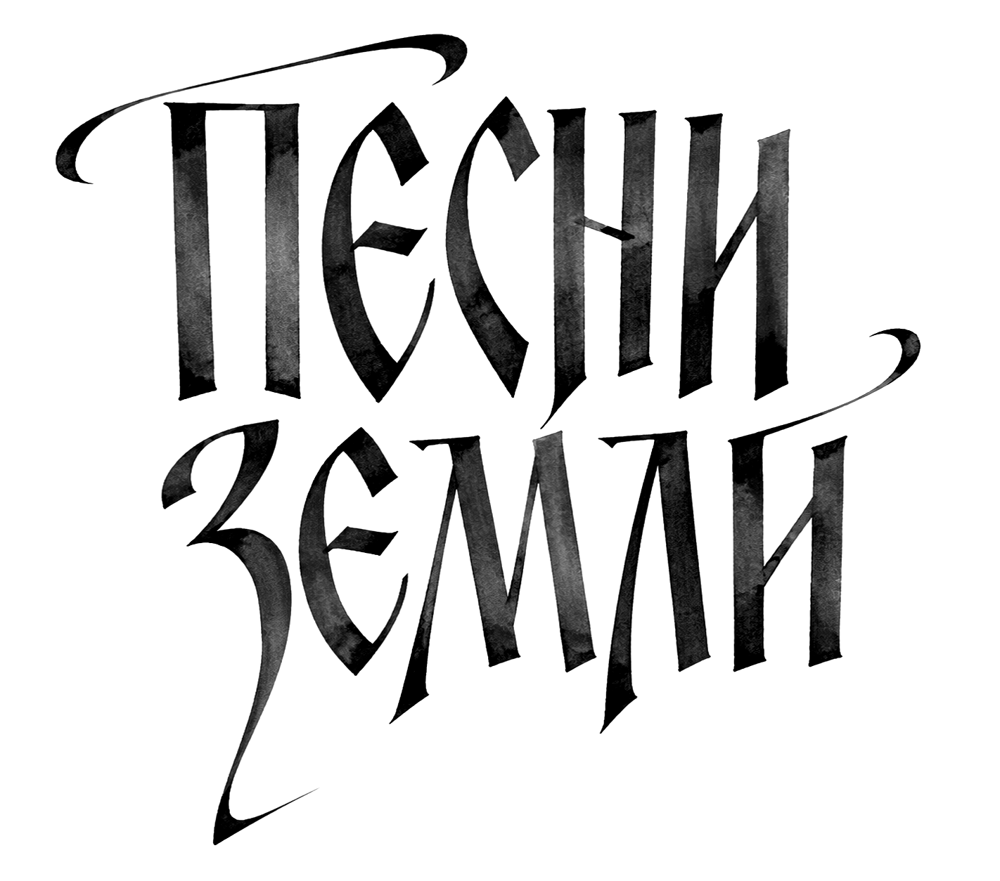
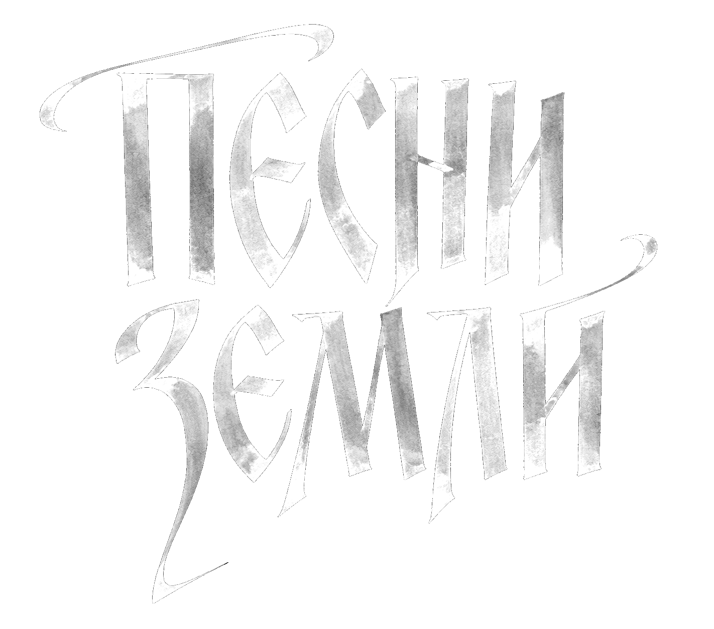
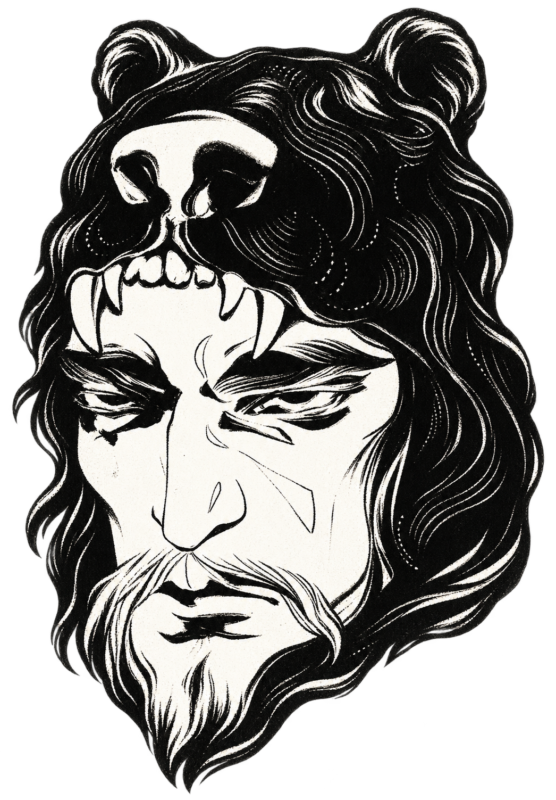
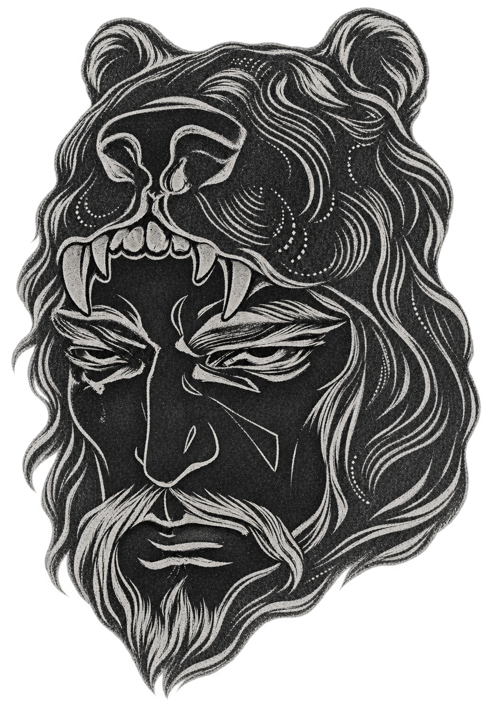
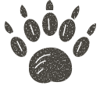
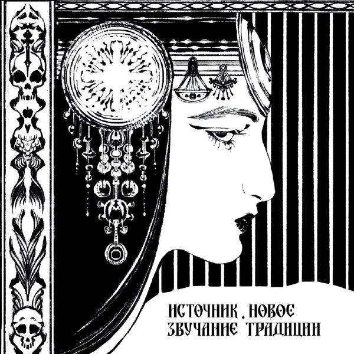
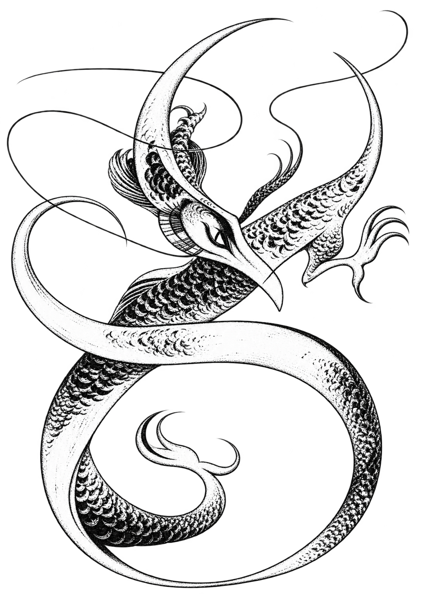
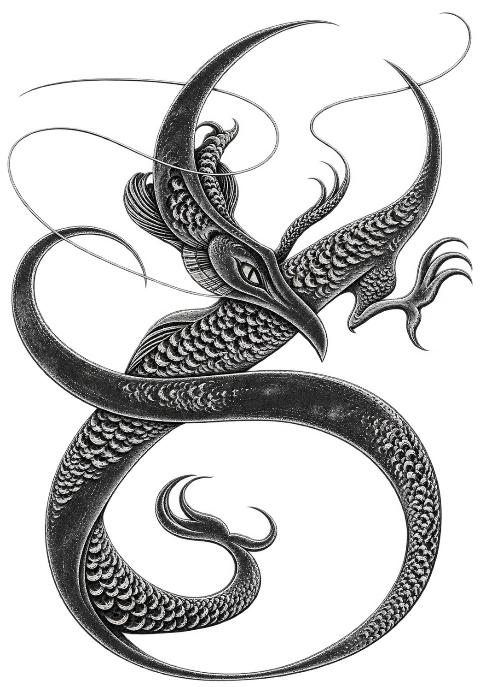
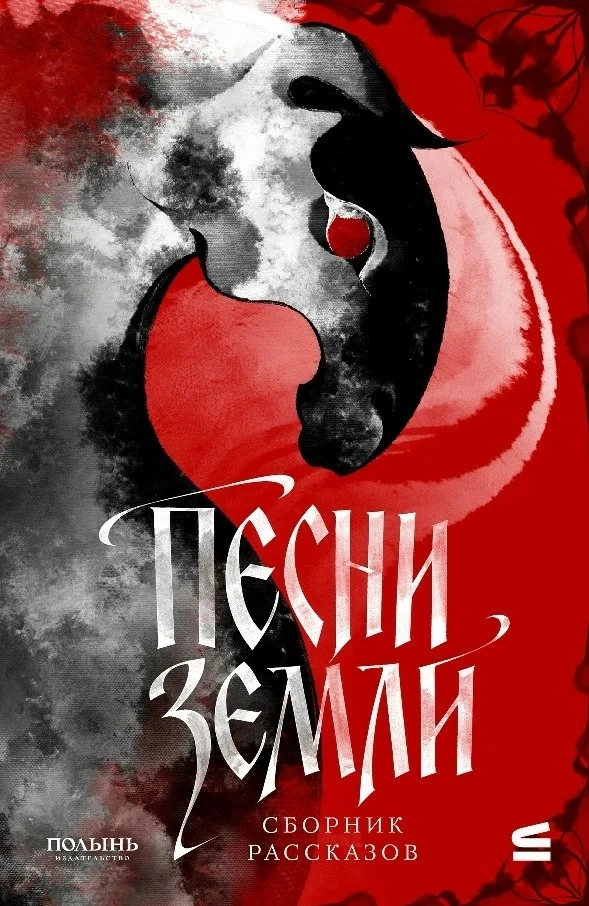

Песни Земли


У каждой земли
свой голос.
Древние легенды,
забытые обряды, сказки
оживают на страницах
этих рассказов.


У каждой земли
свой голос.
Древние легенды,
забытые обряды, сказки
оживают на страницах
этих рассказов.
коснитесь земли, чтобы узнать ее историю
условная художественная карта земель
Игра по мотивам «Маски человека» от студентов Школы дизайна НИУ ВШЭ
Беги и меняй облик человека и медведя, чтобы преодолеть препятствия на пути.


здесь скоро начнётся игра
Игры от студентов Школы дизайна НИУ ВШЭ
Исследуй мир, пройди испытания и собери три дара, чтобы помочь Амипат выбрать любимого.
здесь скоро начнётся игра
Листай карточки и выбирай, кому довериться — человеку или зверю внутри тебя.


здесь скоро начнётся игра
«Источник. Новое звучание традиции» — альбом ON Лейбла, в котором народная музыка звучит по-новому. Продолжи путешествие по миру «Песен Земли» через музыку.



Бот-странник по рассказам сборника «Песни Земли» от КИОН Строки.
Продолжи знакомство с историями в Telegram.
К боту